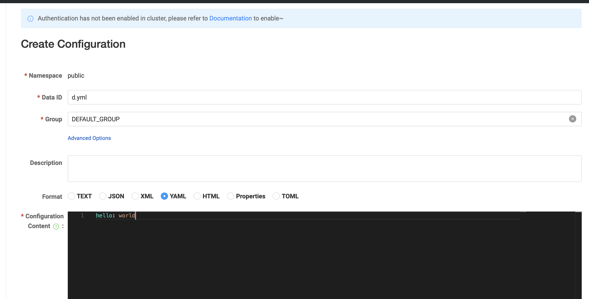

中间件速成 Ch25 Nacos 服务治理
现在我们补充一些中间件的使用。现在我们先从 Nacos 开始。Nacos 与我们之前学习过的 Consul 有一些相似之处。
启动并连接 Nacos
这里依然使用 docker 启动，按照 Nacos 官网的说明，使用以下命令启动，
git clone https://github.com/nacos-group/nacos-docker.git
cd nacos-docker
docker compose -f example/standalone-derby.yaml up
启动后，使用 localhost:8848/nacos 访问 Nacos 控制台。
要将 Spring Cloud 项目连接到 Nacos，添加
implementation 'com.alibaba.cloud:spring-cloud-starter-alibaba-nacos-config:2023.0.3.2'
implementation 'com.alibaba.cloud:spring-cloud-starter-alibaba-nacos-discovery:2023.0.3.2'
implementation 'org.springframework.cloud:spring-cloud-starter-bootstrap:4.2.0'
其中第一个是用于服务配置的，第二个是用于服务发现的。这两个需要依赖 bootstrap 包，这个包的功能我们已经在前文介绍过了，用于区分 bootstrap 阶段的配置和实际应用的配置。所有启动应用必须的配置放在 bootstrap 配置文件中，所有应用的配置放在 application 配置文件中。不过这里我们不需要额外的配置文件，只需要在 application.properties 中配置即可。但是依然必须引入这个包。
然后配置， spring.cloud:nacos.config.server-addr 参数，填入 localhost:8848。
启动后，可以在 Nacos 控制台看到注册的服务。

之后服务调用和我们之前讲解的完全一致，启用负载均衡和可以直接使用服务名，不再需要额外的配置。
Nacos 作为配置中心
使用 Value 注解
下面演示如何使用 Nacos 同步配置。依赖我们已经在上面添加了。
在 Nacos 控制台页面，此处选择配置列表，然后新建一个配置，填入配置名和配置内容。


创建配置页面的 Data ID 即文件名。
此外，Nacos 也提供了命名空间机制，可以用于区分不同的环境。这个功能在 Nacos 控制台的左上角可以看到。
然后在 Spring Cloud 项目中，添加，
spring:
config:
import:
- nacos:d.yml
如果需要指定命名空间和分组，使用，
spring:
cloud:
nacos:
config:
namespace: 11111111-1111-1111-1111-111111111111
config:
import:
- nacos:d.yaml?group=DEFAULT_GROUP
如果要实现 profile 区分，可以利用 yaml 的多文档特性，
spring:
profiles:
active: dev
---
spring:
config:
import:
- nacos:d.yml
activate:
on-profile: dev
现在创建一个 Controller 用于获取配置的参数，
package com.github.fingerbone;
import org.springframework.web.bind.annotation.RestController;
import org.springframework.beans.factory.annotation.Value;
import org.springframework.context.annotation.Configuration;
import org.springframework.web.bind.annotation.GetMapping;
@RestController
@Configuration
public class TestController {
@Value("${hello}")
private String hello;
@GetMapping("/hello")
public String getHello() {
return hello;
}
}
现在打开网页测试，可以看到返回了配置中的内容。
同样的，我们可以使用 @RefreshScope 注解来实现配置的动态刷新。这点在之前的文章中已经讲过，这里不再赘述。
使用 ConfigurationProperties 注解
此外，还有一种方法可以批量简单地获取配置，即使用 @ConfigurationProperties 注解。这个注解可以将配置文件中的配置映射到一个类中，然后直接注入这个类即可。这一点我们之前没有讲过，在这里简单介绍一下。
在现在这个例子中，使用，
@Data
@Component
@ConfigurationProperties(prefix = "")
public class Config {
private String hello;
}
这样直接注入这个 Bean 即可。注意，这里不需要 @RefreshScope 注解，也会自动刷新。
此外，这个类中字段与配置文件的映射规则是 prefix.field，prefix 即注解里面的参数，field 是把类的驼峰命名的名称转换为 kebab-case 的名称。例如，helloWorld 对应 hello-world。只要配置文件中的配置符合这个规则，就可以直接注入。
监听配置变化
此外我们还可以添加配置变化的回调，只要向 NacosConfigManager 中添加监听器即可。
@Bean
ApplicationRunner applicationRunner(NacosConfigManager nacosConfigManager) {
return args -> {
nacosConfigManager.getConfigService().addListener("d.yml", "DEFAULT_GROUP", new Listener() {
@Override
public void receiveConfigInfo(String configInfo) {
System.out.println("Config changed: " + configInfo);
}
@Override
public Executor getExecutor() {
return Executors.newSingleThreadExecutor();
}
});
};
}